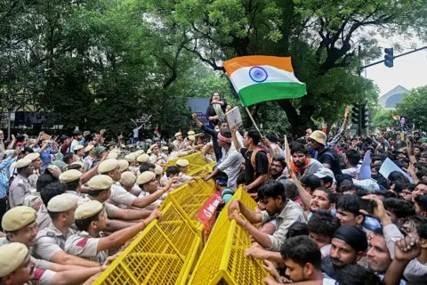

The Spark: The demonstrations began in June after major security breaches forced over two million students to retake the highly competitive NEET-UG medical school entrance exams.
The Strategy: The youth-led campaign stood out for its highly digital presence, using irreverent humor, internet memes, and pop-culture costumes (like Spider-Man and Batman masks) to maintain morale and draw global attention.
High-Profile Backing: Celebrated climate activist Sonam Wangchuk joined the students at Jantar Mantar, executing a high-profile 26-day hunger strike in solidarity before breaking his fast upon receiving government assurances.